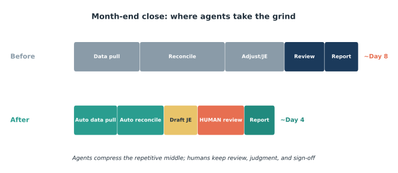
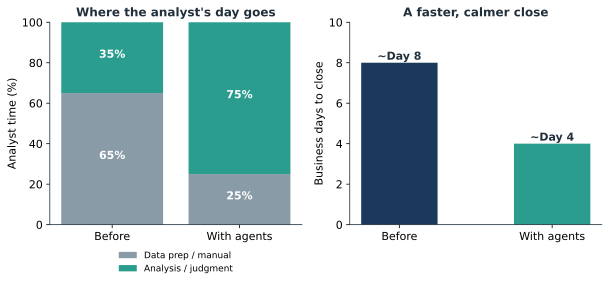

Issue 5 — Agents in FP&A and the month-end close
An FP&A lead who used to lose the first week of every month to the close now spends it on forecasting — the two charts below are what that trade looks like in numbers.

The number that gets a CFO's attention: teams that put agents on the repetitive middle of the close routinely compress it from roughly eight business days toward four (Figure 5.2, illustrative of commonly reported ranges). Halving the close isn't just speed — it pulls insight forward, so leadership sees explained results a week earlier, every single month.
The mechanism is a clean division of labor (Figure 5.1). Data pulls, first-pass reconciliations, and routine journal-entry drafts are high-volume and rule-bound — exactly what an agent handles. Reviews, exceptions, and sign-off are judgment — exactly what humans keep. Put concretely, an analyst's month-end typically inverts: from something like two-thirds data prep and one-third analysis, to the reverse. Same headcount, dramatically more of it aimed at the work that actually informs decisions. This is the throughline in ledger form — a chatbot answers; an agent acts — and only acting shortens cycle time.

Why FP&A is such fertile ground: the close is a defined, recurring, auditable process with clear pass/fail conditions on every reconciliation. That legibility is what lets an agent traverse it and a human verify it quickly. And the payoff compounds — this isn't a one-time saving, it's four-plus days returned every month, roughly fifty a year, redirected from assembly to analysis and forecasting.
Controls, as always, are the gating concern and the design answers it. Every drafted entry passes a human-in-the-loop gate before posting; approval and sign-off stay with the accountable humans; the agent operates under a scoped identity with a complete action log, so the close is more auditable, not less. You get the speed and a cleaner trail in the same move.
Recommended pilot: instrument this month's close as a baseline — business days to close, analyst hours split between prep and analysis, and number of manual reconciliations. Automate one sub-ledger reconciliation and the routine entries next close, keep everything behind the review gate, and compare. If you get even half the compression the ranges suggest, the case makes itself. Forward this to whoever owns close timeliness and FP&A capacity.
Sources
- Commonly reported close-cycle compression ranges with agentic automation (2026, illustrative).
- Human-in-the-loop / agent-identity controls per accelirate.com.
- kore.ai; Generative, Inc. (2026) — "a chatbot answers; an agent acts."